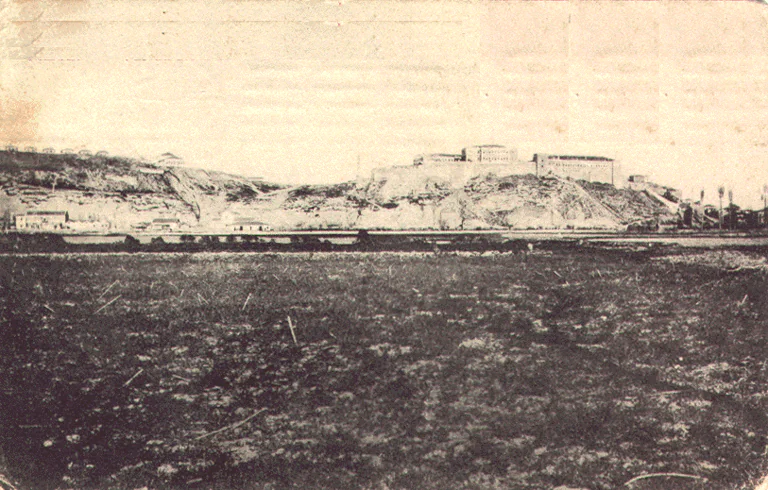
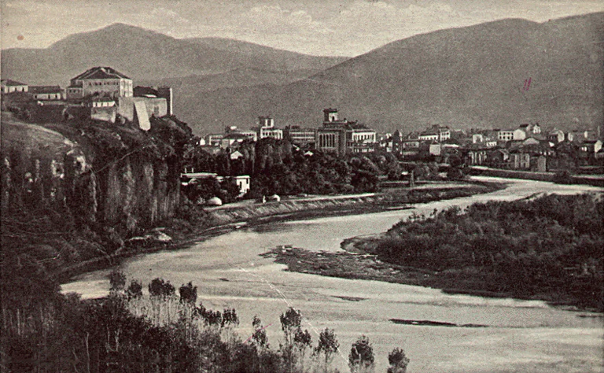
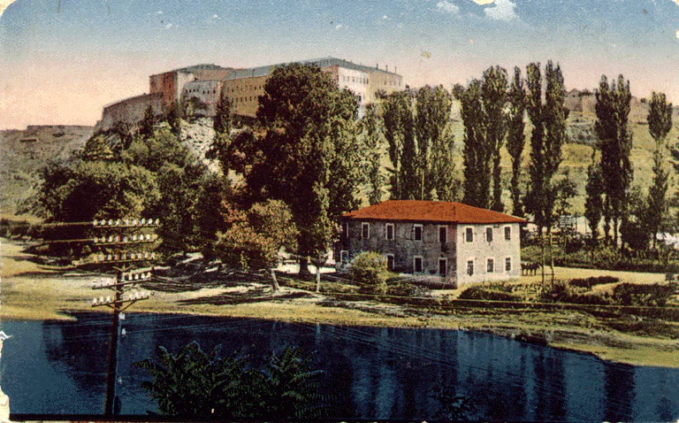
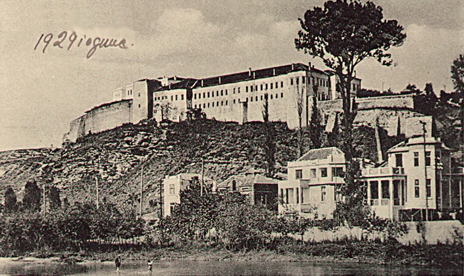

Καλέ
- Παραγωγή
- UFUŽ και Documentary Film Prague
- Σενάριο και σκηνοθεσία
- Σλάβκο Γιανέφσκι και EMAN CANERA
- Έτος
- 1959
- Διάρκεια
- 00:10

Η είσοδος του φρουρίου των Σκοπίων - Καλέ. (αρχές του 20ού αιώνα)
Ένα από τα πιο δεσπόζοντα σημεία στο κέντρο της πόλης των Σκοπίων καταλαμβάνει το φρούριο των Σκοπίων - Καλέ*. Οι αρχαιολογικές ανασκαφές έδειξαν ότι το Καλέ κατοικούνταν ήδη από τους προϊστορικούς χρόνους - τη νεολιθική και την πρώιμη εποχή του χαλκού. Στο Καλέ ζούσαν εξαιτίας της εξαιρετικής στρατηγικής του θέσης. Με τη μελέτη του κτίσματος διαπιστώθηκε ότι στα θεμέλια χρησιμοποιήθηκε υλικό από το Scupi, που είχε καταστραφεί σχεδόν ολοσχερώς στον καταστροφικό σεισμό του 518. Μετά τον σεισμό η πόλη μετακινήθηκε στη σημερινή της θέση. Χτίστηκε οχύρωση που μέσα στους αιώνες επεκτεινόταν και ενισχυόταν. Σήμερα σώζεται μόνο ένα μικρό τμήμα της, που έχει αναστηλωθεί, και στο κέντρο του έχει διαμορφωθεί περίπατος.
* (Καλέ στα τουρκικά σημαίνει φρούριο, και ο λαός υιοθέτησε τη λέξη ως σύντομη ονομασία για το φρούριο των Σκοπίων)

Το φρούριο των Σκοπίων - Καλέ με τμήμα των τειχών του.
- αρχές του 20ού αιώνα

Το φρούριο των Σκοπίων - Καλέ - Δεκαετία του 1910.

Το φρούριο των Σκοπίων - Καλέ - φωτογραφημένο από την πλευρά του σημερινού πάρκου, τέλη του 19ου αιώνα.

Το φρούριο των Σκοπίων - Καλέ - Δεκαετία του 1910.

Το φρούριο των Σκοπίων - Καλέ - Δεκαετία του 1910.

Το φρούριο των Σκοπίων - Καλέ. Φωτογραφημένο από τη θέση του σημερινού πάρκου, Δεκαετία του 1910.

Το φρούριο των Σκοπίων - Καλέ. Φωτογραφημένο από τη θέση του σημερινού πάρκου, Δεκαετία του 1910.
Θέα του φρουρίου των Σκοπίων - Καλέ. Δεκαετία του 1920.

Θέα του φρουρίου των Σκοπίων - Καλέ από τη βόρεια πλευρά.
- Δεκαετία του 1910.

Υπέροχη φωτογραφία της πόλης και του ρου του Βαρδάρη. Αριστερά το φρούριο των Σκοπίων - Καλέ. Στο κέντρο φαίνονται τα κτίρια της Λέσχης Αξιωματικών και της Εθνικής Τράπεζας. Δεξιά το όρος Βόντνο, και στο βάθος οι παρυφές του όρους Κίτκα
- τέλη της δεκαετίας του 1920.

Το φρούριο των Σκοπίων - Καλέ και το παλιό καφενείο «Μπόγκες», όπου συγκεντρώνονταν οι ηθοποιοί και γίνονταν οι πρώτες θεατρικές παραστάσεις - αρχές του 20ού αιώνα.

Το φρούριο των Σκοπίων - Καλέ με τους στρατώνες - 1911. Κάτω από το φρούριο φαίνεται το παλιό καφενείο «Μπόγκες».

Το φρούριο των Σκοπίων - Καλέ και το παλιό καφενείο «Μπόγκες»
- τέλη της δεκαετίας του 1910.

Η φωτογραφία τραβήχτηκε από την Πέτρινη γέφυρα, περίπου το 1910. Αριστερά φαίνεται το παλιό τουρκικό θέατρο, και πάνω από αυτό το φρούριο των Σκοπίων - Καλέ.

Η φωτογραφία τραβήχτηκε από την Πέτρινη γέφυρα, περίπου το 1910. Αριστερά φαίνεται το παλιό τουρκικό θέατρο, και πάνω από αυτό το φρούριο των Σκοπίων - Καλέ.

Το φρούριο των Σκοπίων - Καλέ και η παλιά εβραϊκή συνοικία από κάτω - τέλη της δεκαετίας του 1910.

Το φρούριο των Σκοπίων - Καλέ, με μέρος των υπό κατασκευή σπιτιών της εβραϊκής συνοικίας - Δεκαετία του 1920.

Το φρούριο των Σκοπίων - Καλέ, και από κάτω μέρος των σπιτιών της εβραϊκής συνοικίας - Δεκαετία του 1920.

Το φρούριο των Σκοπίων - Καλέ και τα νεόκτιστα κτίρια στην εβραϊκή συνοικία - Δεκαετία του 1920.

Το φρούριο των Σκοπίων - Καλέ με μέρος των σπιτιών της εβραϊκής συνοικίας - Δεκαετία του 1920.

Το φρούριο των Σκοπίων - Καλέ και τα νεόκτιστα κτίρια στην εβραϊκή συνοικία - Δεκαετία του 1920.

Το φρούριο των Σκοπίων - Καλέ. Από κάτω μέρος των σπιτιών της εβραϊκής συνοικίας - Δεκαετία του 1920.

Το φρούριο των Σκοπίων - Καλέ και τα νεόκτιστα κτίρια στην εβραϊκή συνοικία - Δεκαετία του 1920.

Θέα του φρουρίου των Σκοπίων - Καλέ από έναν από τους δρόμους της εβραϊκής συνοικίας - Δεκαετία του 1920.

Φωτογραφία από τη Λέσχη Αξιωματικών - περίπου 1930. Υπέροχη φωτογραφία του Εθνικού Θεάτρου, του ξύλινου γεφυριού και του φρουρίου των Σκοπίων - Καλέ.

Στο πρώτο πλάνο το Εθνικό Θέατρο, και πάνω από αυτό υψώνεται το φρούριο των Σκοπίων - Καλέ - Δεκαετία του 1930.

Φωτογραφία του φρουρίου των Σκοπίων - Καλέ, όπου διακρίνονται καλά τα επιμέρους κτίσματα της οχύρωσης. Κάτω από το φρούριο φαίνεται το Εθνικό Θέατρο σε όλη του την ομορφιά.
- Δεκαετία του 1930.

Φωτογραφία του φρουρίου των Σκοπίων - Καλέ, όπου διακρίνονται καλά τα επιμέρους κτίσματα της οχύρωσης. Κάτω από το φρούριο φαίνεται το Εθνικό Θέατρο - Δεκαετία του 1930.

Στο πρώτο πλάνο το Εθνικό Θέατρο, και πάνω από αυτό υψώνεται το φρούριο των Σκοπίων - Καλέ - Δεκαετία του 1950.

 Υδραγωγείο4 καρτ-ποστάλ
Υδραγωγείο4 καρτ-ποστάλ Καλέ30 καρτ-ποστάλ
Καλέ30 καρτ-ποστάλ Γέφυρες60 καρτ-ποστάλ
Γέφυρες60 καρτ-ποστάλ Προκυμαία58 καρτ-ποστάλ
Προκυμαία58 καρτ-ποστάλ Πλατεία46 καρτ-ποστάλ
Πλατεία46 καρτ-ποστάλ Κτίρια66 καρτ-ποστάλ
Κτίρια66 καρτ-ποστάλ Χριστιανικοί ναοί19 καρτ-ποστάλ
Χριστιανικοί ναοί19 καρτ-ποστάλ Μουσουλμανικά κτίρια33 καρτ-ποστάλ
Μουσουλμανικά κτίρια33 καρτ-ποστάλ Λέσχη Αξιωματικών29 καρτ-ποστάλ
Λέσχη Αξιωματικών29 καρτ-ποστάλ Θέατρο28 καρτ-ποστάλ
Θέατρο28 καρτ-ποστάλ Σιδηροδρομικός σταθμός13 καρτ-ποστάλ
Σιδηροδρομικός σταθμός13 καρτ-ποστάλ Σχολεία36 καρτ-ποστάλ
Σχολεία36 καρτ-ποστάλ Πάρκα12 καρτ-ποστάλ
Πάρκα12 καρτ-ποστάλ Αγορές18 καρτ-ποστάλ
Αγορές18 καρτ-ποστάλ Δρόμοι38 καρτ-ποστάλ
Δρόμοι38 καρτ-ποστάλ Πανόραμα I60 καρτ-ποστάλ
Πανόραμα I60 καρτ-ποστάλ Πανόραμα II30 καρτ-ποστάλ
Πανόραμα II30 καρτ-ποστάλ Κολάζ55 καρτ-ποστάλ
Κολάζ55 καρτ-ποστάλ Πλημμύρες9 καρτ-ποστάλ
Πλημμύρες9 καρτ-ποστάλ Σεισμός27 καρτ-ποστάλ
Σεισμός27 καρτ-ποστάλ Σκόπια 200026 καρτ-ποστάλ
Σκόπια 200026 καρτ-ποστάλ